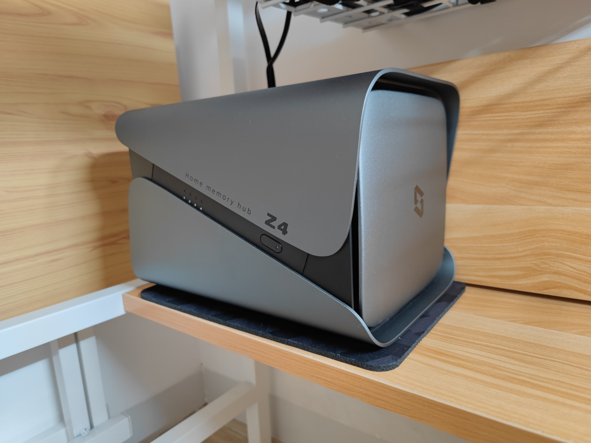
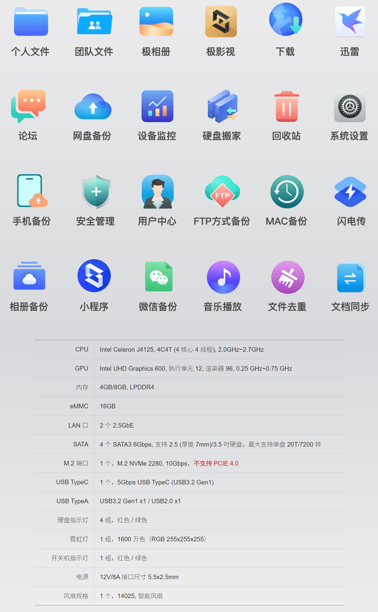

NAS初体验：极空间新Z4
618张大妈疯狂刷屏极空间新Z4，好奇之下我入手了一个😒，而后又入手4块希捷和西数的4T垂直监控盘，总算把盘位填满了。根据网上介绍，极空间这两年推出了不少产品，本土化不错，用户不折腾。有了之前各种网盘和自建网盘的折腾经历，极空间这个特点倒是极大地吸引了我。
鉴于我是第一次使用NAS，没有自装NAS以及使用其它NAS产品的经历，因此无法深度横评对比，关于极空间新Z4的体验仅仅是小白用户的感受。
优点
好话说在前，先来看看优点。
- 外观
Z4颜值是真的没得说😭，单是这外观就直接敲开我半个心房（流口水）。外表面星空灰铝合金，质感杠杠的。

- 从开机到使用，全程小白式引导，跟着指引点点点毫无压力。
- 外网访问相当方便，就操作APP、查看照片、远程控制NAS的操作来说，内网外网在体验上没什么区别。之前看NAS教程，有不少提到要公网IP、穿透之类的操作，又得是一番折腾，但Z4上就没这个问题了。
- 影片信息补全归类功能相当方便，基本都能识别出来。
- 相册响应很快，人脸识别归类功能也还不错。
- 噪音相当小，搭配了4块4T 5400rpm硬盘，放小单间内噪音几乎无感（或许跟硬盘本身噪音小也有关系）。
- 分享功能很方便，不用担心被限速或者被和谐。
- 下载、迅雷、百度网盘很方便。
槽点
Z4使用下来槽点也不少
文件管理 文件管理只能开一个窗口，无法多开(Windows端)； 文件解压只能解压到当前文件夹，并且无法批量解压，只能一个一个点击，解压过程用也无法合并文件夹； 没有类似的Ctrl+X的剪切快捷键操作
相册(相较于谷歌相册) 相册无法识别视频的人像并自动归类。 手机访问相册，修改人物分类和名字的时候经常显示数据库更新中导致无法保存。
影视 播放4k视频时，拖动进度条不太顺畅，有时出现进度条无法拖动的情况，(是我对性能要求太高了嘛)
阅读 阅读功能为什么只有安卓客户端才有，在ipad和Windows无法继续阅读。
希望加入更多网盘接口，如 Onedrive、谷歌云盘、dropbox等。
官网介绍

为什么要用NAS
国内网盘空间够大，如百度网盘、阿里网盘、天翼网盘等，就价格来说还能接受，但其中最大的问题就是内容和谐，文件分分钟和谐不带商量的。OneDrive、谷歌云盘等国外网盘我用过不少，购买云服务器自建网盘的方案也都尝试过，最终文件还是放在自己的硬盘上更加踏实一点，能提供类似个人云盘功能的自然是NAS了（网络储存设备，Network Attached Storage）。